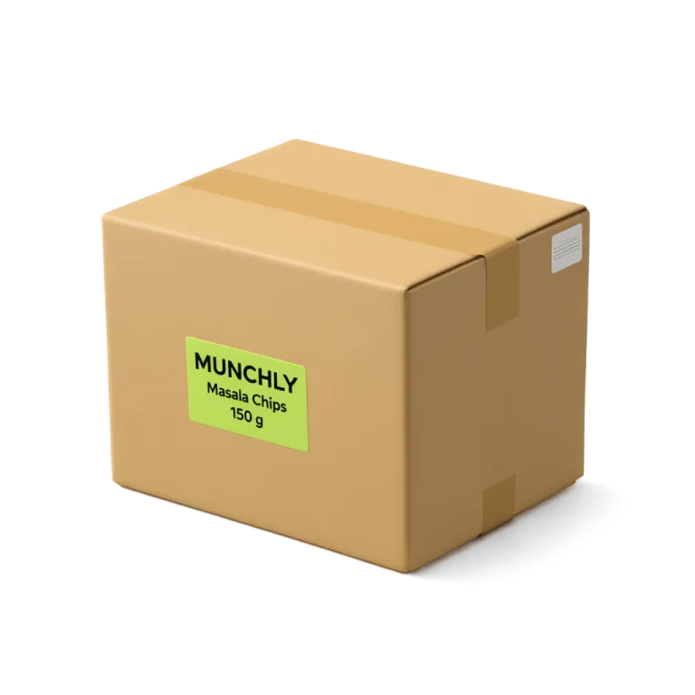
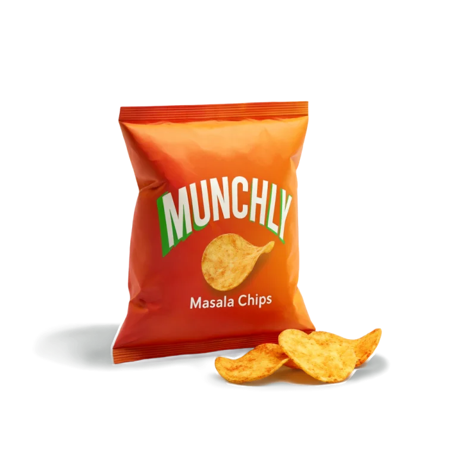
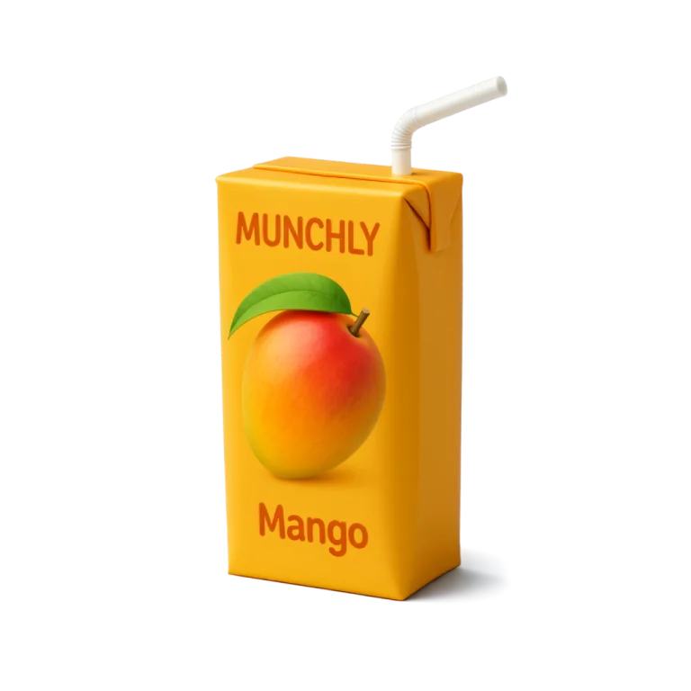

Munchly makes snacks and drinks in Pune and sells them through distributors to the kiranas, India's
corner shops. Two batches won't sell before their best-before date. Smart-Clearance's agents plan where each one
goes, and Munchly's supply chain operator says yes.
m
Munchly Foods
The brand, in Pune · the client



Priya Deshmukh Workspace
Supply chain operator
Gives the one yes on each plan and the second yes on a destruction, reviews the papers,
reads the ledger.
Arjun Nair Workspace
Workspace admin
Looks after Munchly's workspace: its people and the agents' guardrails.
Smart-Clearance
The platform · one workspace for each client
Neha Kulkarni Console
Staff · Super admin
Sets each client up. In the demo she resets the journey and fires the agents' timers.
The agents, on Gemini, act for Munchly inside its guardrails